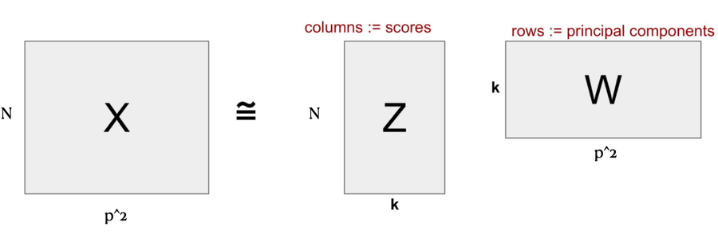
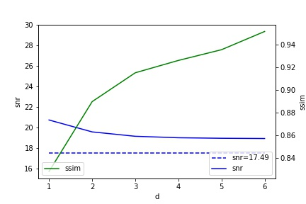
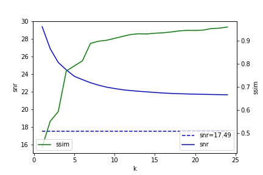
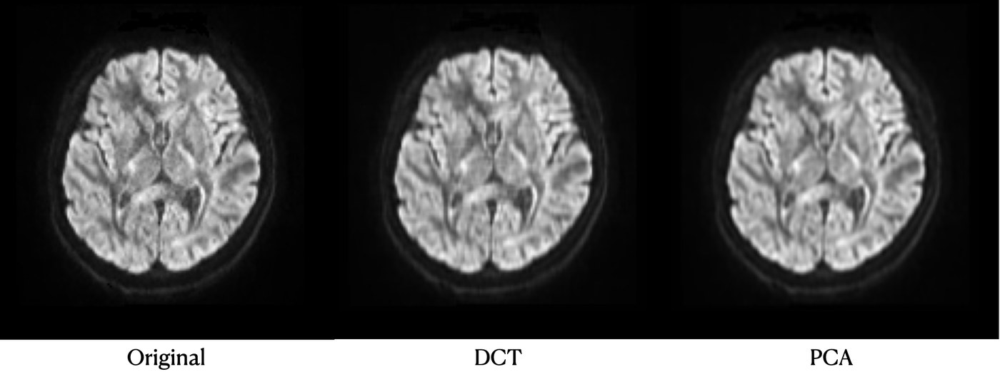

Biomedical imaging · course research
Denoising diffusion-weighted MRI: DCT versus PCA
Diffusion-weighted MRI trades signal for speed, and comes out grainy enough that quantitative measurements drift. We implemented two classical denoisers from scratch, measured both across three subjects and four b-values, and found PCA ahead by roughly 3.5 dB — but the more interesting result was the ceiling both of them hit.
The DCT denoiser, running on a real slice
Genuine 8×8 block DCT, coefficient truncation and inverse DCT — computed in your browser on an actual diffusion-weighted slice from the dataset.
Original
DCT denoised
Coefficients kept
Low frequency top-left, high frequency bottom-right.
Structural similarity against d
Computed live on this slice, not read off the paper.
The live denoiser couldn't start in this browser. The figures below show the same results.
Drag d down and the speckle in the background goes with it — along with the cortical detail you were trying to measure. That coupling is the entire problem, and no choice of d escapes it.
Why this image is noisy on purpose
Diffusion-weighted imaging measures the Brownian motion of water molecules inside tissue. Where that motion is restricted — an acute stroke, a tumour — the signal changes, which makes DWI one of the fastest ways to see an infarct that a conventional MRI would miss entirely.
The catch is physics. Diffusion weighting deliberately destroys signal amplitude, and the fast echo-planar readout it needs picks up a lot of thermal noise. The result is an intrinsically poor signal-to-noise ratio — and because the diffusion coefficients clinicians actually care about are computed from ratios of these images, that noise doesn't just look bad. It biases the numbers.
The question. Two classical, non-learned denoisers — one working in the frequency domain, one in the pixel domain — how much SNR can each recover, and what does it cost in structural fidelity? No neural network, no training data, no GPU. Just transforms with a knob on them.
Two transforms, one idea
Both methods share a shape: cut the slice into small overlapping patches, move each patch into a basis where signal and noise separate, throw away the components that are mostly noise, and transform back. They differ only in which basis.
Shared: patches in, image out
A sliding window steps one pixel at a time across the slice, so patches overlap heavily. On the way back, every output pixel is the sum of each patch that covered it, divided by a weight map counting those overlaps. The averaging is not incidental — it is doing real work, suppressing the block artifacts that a non-overlapping transform would leave behind.
DCT — throw away high frequencies
On 8×8 patches, take the 2-D discrete cosine transform and keep only the top-left d × (d+1) coefficients, zeroing the rest. Noise is broadband and therefore mostly lives in the high-frequency corner; image structure concentrates in the low-frequency one. Truncation is a low-pass filter, and d is its cutoff. That is exactly what the figure at the top of this page is doing.
PCA — throw away minor components
On 5×5 patches, flatten each patch into a 25-element vector, stack them into a matrix X, centre the columns, and take the SVD. Pixels from the same tissue covary strongly; noise does not covary with anything. So the leading principal components carry the anatomy and the trailing ones carry mostly noise — keep the top k, discard the rest, reconstruct.

The result that actually matters
Both knobs work. Turn d or k down and SNR climbs. But structural similarity to the original falls at the same time, and it falls faster. Plotting both against the parameter makes the bind obvious: there is no setting where you get the noise reduction for free.


A low SSIM means the image has been smoothed into uselessness. A high SSIM means you've faithfully preserved the original — including its noise. Neither extreme is the goal, so the operating point had to be chosen rather than optimised. Scoring denoised images by eye, the usable window turned out to be SSIM between 0.88 and 0.93, which pins d to [2, 5] for DCT and k to [8, 16] for PCA.
Why that matters more than the headline number. A denoiser with a free parameter can be tuned to win almost any single metric. Reporting the range where both metrics stay acceptable — and admitting it was fixed by human judgement, not by an objective function — is the difference between a result and a number.
Measured across three subjects
The dataset images the same three people on identical acquisition settings, at four diffusion weightings. That gives twelve independent chances for the comparison to come out differently. It never does.
| Subject | b-value | Original | DCT | Δ | PCA | Δ |
|---|---|---|---|---|---|---|
| sub-1 | 0 | 14.4 ±0.2 | 15.8 ±0.3 | +1.4 | 18.8 ±0.3 | +4.4 |
| 1000 | 16.8 ±0.2 | 18.4 ±0.2 | +1.6 | 21.5 ±0.1 | +4.7 | |
| 2000 | 16.0 ±0.3 | 17.7 ±0.3 | +1.7 | 21.1 ±0.5 | +5.1 | |
| 3000 | 16.3 ±0.1 | 18.1 ±0.1 | +1.8 | 21.6 ±0.1 | +5.2 | |
| sub-2 | 0 | 15.7 ±0.4 | 17.3 ±0.4 | +1.6 | 20.9 ±0.4 | +5.2 |
| 1000 | 17.1 ±0.4 | 18.9 ±0.4 | +1.7 | 22.8 ±0.4 | +5.7 | |
| 2000 | 16.7 ±0.1 | 18.9 ±0.3 | +2.1 | 22.7 ±0.1 | +5.9 | |
| 3000 | 16.5 ±0.2 | 18.5 ±0.1 | +1.9 | 22.7 ±0.3 | +6.2 | |
| sub-3 | 0 | 16.3 ±0.2 | 17.8 ±0.2 | +1.5 | 21.2 ±0.1 | +5.0 |
| 1000 | 17.7 ±0.3 | 19.4 ±0.2 | +1.6 | 22.9 ±0.1 | +5.2 | |
| 2000 | 17.1 ±0.4 | 18.8 ±0.4 | +1.7 | 22.5 ±0.2 | +5.4 | |
| 3000 | 16.6 ±0.2 | 18.8 ±0.2 | +2.1 | 22.7 ±0.1 | +5.7 |
PCA wins all twelve, by 4.4 to 6.2 dB against DCT's 1.4 to 2.1. The gap also widens with b-value — the noisier the acquisition, the more PCA's advantage shows, which is the useful direction for it to run, since high-b images are the ones that need help.
SNR was measured following the NEMA two-adjacent-slice standard, using the whole brain as the region of interest rather than a small white-matter patch. That choice was deliberate: a small ROI lets a heavily blurred image post a flattering SNR, and we wanted the metric to resist exactly the failure mode we were most likely to produce.

What we'd fix
Two problems we found and did not solve:
- Denoising and blurring are the same operation here. Both methods lose overall image quality as they gain SNR. The trade-off curves quantify it; they don't escape it. A method that separates noise from structure using more than second-order statistics — a learned prior — would not face the same wall.
- We worked slice by slice. DWI is volumetric, and adjacent slices are highly correlated. Denoising each 2-D slice independently throws that away and loses components when the slices are stacked back into a volume. Operating on 3-D patches is the obvious next step.
The natural continuation is the one the related work already pointed at: a convolutional network denoising the whole volume, trained voxel-to-voxel on low-noise acquisitions. That is a considerably larger project, and it is honestly where the field went.
The talk
The paper
Six pages, IEEE format. Open it in its own tab ↗ to read full-screen.
Everything, in its original form
PDFs open in a new tab; notebooks download.
Credit where it's due
A five-person course project
Yiming Cao was first author and was principally responsible for the code — the DCT and PCA denoisers and the evaluation pipeline. Topic selection and dataset collection were handled by team members. The paper, the presentation and the slides were produced collaboratively by the whole group.
The interactive denoiser on this page was written afterwards by Yiming Cao. It reimplements the project's DCT method in JavaScript and is not part of the original submission.
Data
Q. Tong, H. He, T. Gong, C. Li, P. Liang, T. Qian, Y. Sun, Q. Ding, K. Li, J. Zhong. Multicenter dataset of multi-shell diffusion MRI in healthy traveling adults with identical settings. Scientific Data 7, 2020. Open dataset, healthy adult volunteers, 1.5 mm isotropic, b = 0/1000/2000/3000 s·mm⁻².
Prior work the methods build on
- L. Zhang et al. Two-stage image denoising by principal component analysis with local pixel grouping. Pattern Recognition, 2010.
- J. V. Manjón et al. Diffusion weighted image denoising using overcomplete local PCA. PLoS ONE, 2013.
- H. Cheng et al. Denoising diffusion weighted imaging data using convolutional neural networks. bioRxiv, 2022.